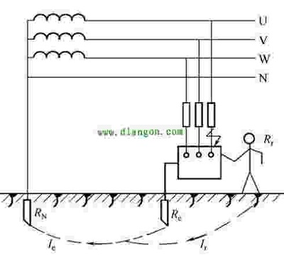

根据现行的国家标准《低压配电设计规范》(GB 50054-2011)，低压配电系统有IT系统、TT系统、TN系统三种接地形式。
①IT、TT、TN的第一个字母表示电源端与地的关系
T表示电源变压器中性点直接接地；I标志电源变压器中性点不接地，或通过高阻抗接地。
②IT、TT、TN的第二个字母表示电气装置的外露可导电部分与地的关系
T标志电气装置的外露可导电部分直接接地，此接地点在电气上独立于电源端的接地点；N表示电气装置的外露可导电部分与电源端接地点有直接电气连接。
IT系统
IT系统就是电源中性点不接地，用电设备外露可导电部分直接接地的系统。IT系统可以有中性线，但IEC强烈建议不设置中性线。因为如果设置中性线，在IT系统中N线任何一点发生接地故障，该系统将不再是IT系统。
IT系统特点
①IT系统发生第一次接地故障时，仅为非故障相对地的电容电流，其值很小，外露导电部分对地电压不超过50V，不需要立即切断故障回路，保证供电的连续性；
②发生接地故障时，对地电压升高1.73倍；
③220V负载需配降压变压器，或由系统外电源专供；
④安装绝缘监察器。使用场所：供电连续性要求较高，如应急电源、医院手术室等。
⑤IT方式供电系统在供电距离不是很长时，供电的可靠性高、安全性好。一般用于不允许停电的场所，或者是要求严格地连续供电的地方，例如电力炼钢、大医院的手术室、地下矿井等处。地下矿井内供电条件比较差，电缆易受潮。
⑥运用IT方式供电系统，即使电源中性点不接地，一旦设备漏电，单相对地漏电流仍小，不会破坏电源电压的平衡，所以比电源中性点接地的系统还安全。但是，如果用在供电距离很长的情况下，供电线路对大地的分布电容就不能忽视了。
⑦在负载发生短路故障或漏电使设备外壳带电时，漏电电流经大地形成架路，保护设备不一定动作，这是危险的。只有在供电距离不太长时才比较安全。这种供电方式在工地上很少见。
TT系统

TT系统就是电源中性点直接接地，用电设备外露可导电部分也直接接地的系统。通常将电源中性点的接地叫做工作接地，而设备外露可导电部分的接地叫做保护接地。TT系统中工作接地和保护接地必须是相互独立的。设备接地可以是每一设备都有各自独立的接地装置，也可以若干设备共用一个接地装置。
TT系统主要优点
①能抑制高压线与低压线搭连或配变高低压绕组间绝缘击穿时，低压电网出现的过电压。
②对低压电网的雷击过电压有一定的泄漏能力。
③与低压电器外壳不接地相比，在电器发生碰壳事故时，可降低外壳的对地电压，因而可减轻人身触电危害程度。
④由于单相接地时接地电流比较大，可使保护装置(漏电保护器)可靠动作，及时切除故障。
TT系统主要缺点
①低、高压线路雷击时，配变可能发生正、逆变换过电压。
②低压电器外壳接地的保护效果不及IT系统。
③当电气设备的金属外壳带电(相线碰壳或设备绝缘损坏而漏电)时，由于有接地保护，可以大大减少触电的危险性。但是，低压断路器(自动开关)不一定能跳闸，造成漏电设备的外壳对地电压高于安全电压，属于危险电压。
④当漏电电流比较小时，即使有熔断器也不一定能熔断，所以还需要漏电保护器作保护，因此TT系统难以推广。
⑤TT系统接地装置耗用钢材多，而且难以回收、费工时、费料。
TT系统的应用
①TT系统由于接地装置就在设备附近，因此PE线断线的几率小，且容易被发现。
②TT系统设备在正常运行时外壳不带电，故障时外壳高电位不会沿PE线传递至全系统。因此，TT系统适用于对电压敏感的数据处理设备及精密电子设备(如自动化仪表)进行供电，在存在爆炸与火灾隐患等危险性场所应用有优势。
③TT系统能大幅降低漏电设备上的故障电压，但一般不能降低到安全范围内。因此，采用TT系统必须装设漏电保护装置或过④电流保护装置，并优先采用前者。
⑤TT系统主要用于低压用户，即用于未装备配电变压器，从外面引进低压电源的小型用户。
TN系统
TN系统即电源中性点直接接地，设备外露可导电部分与电源中性点直接电气连接的系统。在TN系统中，所有电气设备的外露可导电部分均接到保护线上，并与电源的接地点相连，这个接地点通常是配电系统的中性点。TN系统的电力系统有一点直接接地，电气装置的外露可导电部分通过保护导体与该点连接。TN系统通常是一个中性点接地的三相电网系统。其特点是电气设备的外露可导电部分直接与系统接地点相连，当发生碰壳短路时，短路电流即经金属导线构成闭合回路。形成金属性单相短路，从而产生足够大的短路电流，使保护装置能可靠动作，将故障切除。如果将工作零线N重复接地，碰壳短路时，一部分电流就可能分流于重复接地点，会使保护装置不能可靠动作或拒动，使故障扩大化。
在TN系统中，也就是三相五线制中，因N线与PE线是分开敷设，并且是相互绝缘的，同时与用电设备外壳相连接的是PE线而不是N线。因此我们所关心的最主要的是PE线的电位，而不是N线的电位，所以在中重复接地不是对N线的重复接地。如果将PE线和N线共同接地，由于PE线与N线在重复接地处相接，重复接地点与配电变压器工作接地点之间的接线已无PE线和N线的区别，原由N线承担的中性线电流变为由N线和PE线共同承担，并有部分电流通过重复接地点分流。由于这样可以认为重复接地点前侧已不存在PE线，只有由原PE线及N线并联共同组成的PEN线，原TN-S系统所具有的优点将丧失，所以不能将PE线和N线共同接地。
TN系统中，根据其保护零线是否与工作零线分开而划分为TN-S系统、TN-C系统、TN-C-S系统三种形式。
在TN-C系统中，将PE线和N线的功能综合起来，由一根称为PEN线的导体同时承担两者的功能。在用电设备处，PEN线既连接到负荷中性点上，又连接到设备外露的可导电部分。由于它所固有的技术上的种种弊端，现在已很少采用，尤其是在民用配电中，已基本上不允许采用TN-C系统。
TN-C系统的特点
①设备外壳带电时，接零保护系统能将漏电电流上升为短路电流，实际就是单相对地短路故障，熔丝会熔断或自动开关跳闸，使故障设备断电，比较安全。
②TN-C系统只适用于三相负载基本平衡的情况，若三相负载不平衡，工作零线上有不平衡电流，对地有电压，所以与保护线所连接的电气设备金属外壳有一定的电压。
③如果工作零线断线，则保护接零的通电设备外壳带电。
④如果电源的相线接地，则设备的外壳电位升高，使中线上的危险电位蔓延。
⑤TN-C系统干线上使用漏电断路器时，工作零线后面的所有重负接地必须拆除，否则漏电开关合不上闸，而且工作零线后面的所有重复接地必须拆除，否则漏电开关合不上闸，而且工作零线在任何情况下不能断线。所以，实用中工作零线只能在漏电断路器的上侧重复接地。
TN-S系统中性线N与TT系统相同。与TT系统不同的是，用电设备外露可导电部分通过PE线连接到电源中性点，与系统中性点共用接地体，而不是连接到自己专用的接地体，中性线(N线)和保护线(PE线)是分开的。TN-S系统的最大特征是N线与PE线在系统中性点分开后，不能再有任何电气连接，这一条件一旦破坏，TN-S系统便不再成立。
TN-S系统的特点
①系统正常运行时，专用保护线上没有电流，只是工作零线上有不平衡电流。PE线对地没有电压，所以电气设备金属外壳接零保护是接在专用的保护线PE上，安全可靠。
②工作零线只用作单相照明负载回路。
③专用保护线PE不许断线，也不许进入漏电开关。
④干线上使用漏电保护器，所以TN-S系统供电干线上也可以安装漏电保护器。
⑤TN-S方式供电系统安全可靠，适用于工业与民用建筑等低压供电系统。
TN-C-S系统是TN-C系统和TN-S系统的结合形式，在TN-C-S系统中，从电源出来的那一段采用TN-C系统。因为在这一段中无用电设备，只起电能的传输作用，到用电负荷附近某一点处，将EN线分开形成单独的N线和PE线。从这一点开始，系统相当于TN-S系统。
TN-C-S系统的特点
①TN-C-S系统可以降低电动机外壳对地的电压，然而又不能完全消除这个电压。这个电压的大小取决于负载不平衡的情况及线路的长度。要求负载不平衡电流不能太大，而且在PE线上应作重复接地。
②PE线在任何情况下都不能进入漏电保护器，因为线路末端的漏电保护器动作会使前级漏电保护器跳闸造成大范围停电。
③对PE线除了在总箱处必须和N线连接以外，其他各分箱处均不得把N线和PE线相连接，PE线上不许安装开关和熔断器。
实际上，TN-C-S系统是在TN-C系统上变通的作法。当三相电力变压器工作接地情况良好，三相负载比较平衡时，TN-C-S系统在施工用电实践中效果还是不错的。但是，在三相负载不平衡，建筑施工工地有专用的电力变压器时，必须采用TN-S方式供电系统。
关于重复接地
如果没有重复接地，我们看到电源变压器有工作接地，用电设备的外壳直接接地构成保护接地，它就是典型的TT接地系统。
现在，我们把N线的中间某处再次接地，那么N线到底是PEN线或者仍然是N线？
我们来看TN-C接地系统
这两张图有何区别？
1）保护接地方式
我们看到，TT接地系统的用电设备外露导电部分接地方式是就近直接接地，而TN-C则将用电设备外露导电部分接到PEN线上。
由于TT的接地电流是从地网返回电源，而TN-C的接地电流则是从PEN（零线）返回电源，前者的接地电流小，后者的接地电流大。因此，TT叫做小电流接地系统，而TN-C则叫做大电流接地系统。
所以，TT系统的用电设备必须加装RCD漏电保护装置，而TN-C则不必，直接用过电流保护装置（熔断器或者断路器）来保护。
2）当N线断裂后的区别
对于TT系统，当N线断裂后，因为其后部的三相不一定平衡，因此N线电压会上升。但我们必须明白一个道理：TT系统的用电设备外壳不与N线连接，因此N线电压上升好不影响到用电安全。
再看TN-C系统，当PEN线断裂后，其后部的PEN线电压会上升。由于用电设备的外露导电部分是接在PEN线上的，所以TN-C系统的PEN线断点后部的用电设备的外壳会因此带电，由此出现人身伤害事故。
也因此，TN-C的PEN线必须重复接地。
经过分析我们得出以下两个结论：
第一个结论：若N线离开工作接地点后是独立引出的，也即TT系统，则不必再次重复接地；若N线离开工作接地后是以PEN线引出的，也即TN-C系统，则必须再次重复接地。
PEN线又叫做零线，所以TN-C的保护接地又叫做保护接零。
第二个结论：PE线和PEN线离开工作接地后可重复接地，并且多少次都可以；N线离开工作接地后，不建议再次接地。
关于N线是否允许重复接地，可参阅GB50054《低压配电系统设计规范》国家标准。
第三个结论：若TT接地系统的N线重复接地，从用电设备处看电源，它近似为TN-Cj接地系统。因此，TT接地系统下所接的RCD会出现工作不稳定现象。
由以上结论可知，TT系统的N线在离开工作接地引出后，不能重复接地。
TN_C保护中性线必须重复接地。
TN_S和中性线不重复接地，为了避免杂散电流。TN_C_S中性线和保护线分开后也不能重复接地，理由同上。
1.目前工业三相系统中几乎没有TNC了，标准的是TNS，差的也是TNCS，这种系统大多配三厢断路器，所以个人观点，重复接地影响不大。
2.TT系统重复接地会影响保护动作。不建议重复接地。
3.个人认为接地不接地，关键看是否影响保护，由于PE线和TT接地线的存在，基本不影响人身安全。
重复接地作用
1、降低漏电设备的对地电压
如果未重复接地，漏电设备对地电压为单相短路电流在零线部分产生的电压降；而有了重复接地，则漏电设备外壳对地电压仅为接地短路电流在重复接地电阻上产生的电压降。显然，此时设备外壳对地电压仅占零线电压降的一部分，所以危险性相对减小。
2、减轻零线断裂时的触电危险
假如有几个电气设备接在未重复接地的零线上，在设备之间的某一处零线断裂后，某一电气设备发生碰壳短路时，所有接在该段零线断裂点右边的电气设备外壳均带有接近于相电压的电压，而断裂点左边的设备外壳对地电压约等于零。如果在有重复接地时断裂的情况，在设备之间的某一处零线断裂后，断裂处左右两边的设备外壳对地电压之和为电网相电压。因为设备外壳对地电压都小于相电压，所以触电危险性减小。
3、缩短碰壳或接地短路故障的持续时间
由于重复接地和工作接地构成了零线的并联分支，所以一旦发生短路，能增加短路电流，而且线路越长，短路电流越大，这就加速了线路保护装置的动作，缩短了故障的持续时间。
4、改善架空线路的防雷性能
架空线路零线上的重复接地，对雷电流有分流作用，这就有利于限制雷电过电压，从而可改善防雷性能。
TT接地系统不应要求中性线重复接地
中华人民共和国电力行业标准DL499-92《农村低压电力技术规范》(以下简称"规范")规定采用TT系统时应满足如下要求：
除变压器低压侧中性点直接接地外，中性线不得再接地，且保持与相线同等的绝缘水平。
但是，一些单位在两网改造中要求将TT系统中性线作重复接地，理由是防止中性线断线后中性点漂移带来的三相电压不平衡。这是直接违反"规范"规定的。实际上，此做法效果有限，问题不少。
(1) 剩余电流动作保护器不能投入使用：
中性线重复接地后，部分正常负荷电流将流经大地，对剩余电流动作保护器形成剩余电流而使其误动作.
TT系统中性线重复接地引起剩余电流动作总保护误动
"规范"规定，采用TT系统低压电力网应装设剩余电流动作总保护和末级保护，而TT系统中性线作重复接地后是不能装设总保护的，一旦发生单相接地故障或触电事故时无法断开电源，可能造成人身伤亡事故。
个别供电单位为了解决总保护器投运问题，竟将变压器中性线工作接地断开，这是绝对不允许的。配电变压器低压侧中性点直接接地，其目的是配电变压器高、低压绕组一旦因绝缘损坏被击穿时，则可抑制低压侧电压的升高；在单相接地故障中，使非故障相对地电压不会升高；易实施单相接地保护。
(2) 把TT系统变成了TN-C系统
在TT系统中，若把中性线作重复接地，就是把形式上的TT系统，变成了实质上的TN-C系统.
TT系统中性线重复接地后变成了TN-C系统
若N线重复接地点与用户设备接地较近，两个接地电阻是并联电路，也就是把设备外壳接到了中性线上，形成了TN-C系统。
保护接地系统
我国施工现场临时用电系统一般为中性点直接接地的三相四线制低压电力系统，这个系统的接地、接零保护系统有两种形式即：TT系统和TN系统，TN系统又分为TN-C系统、TN-S系统和TN-C-S系统。
TT系统
TT系统是指在电源中性点直接接地的电力系统中，将电气设备的正常不带电的金属外壳或机座直接接地的保护系统。
施工现场作业需用大量电动机械和电动工具以及供电用的配电箱，开关箱等配电装置，如果这些电气设备的正常不带电的金属外壳或基座均作保护接地，则不仅需用大量钢材埋置地下，一次性使用，而且接地装置的制作、埋设量也是很大的，这样就不可能百分之百达到接地要求，尤其对于某些移动电气设备，如移动式电动式电动机具，移动式配电箱、开关箱、照明箱等，保护接地装置是很难实现的，而且工作零线的对地电位受电气设备相线碰壳短路的影响也是一个不利因素。所以，对于施工现场临时用电工程来说，采用TT接地保护系统，从经济、技术角度来看都是不合适的。
TT系统代表符号意义：
T：（第一个字母）表示电源系统的一点直接接地。
T：（第二个字母）表示设备外露导电部分的接地与电源系统的接地电气上无关。
TN系统
TN系统是指电源（变压器）中性点直接接地的电力系统中，将电气设备正常不带电的金属外壳或基座经过中性线（零线）直接接零的保护系统。前面提过，TN系统又分为TN-C，TN-S、TN-C-S系统。
①TN-C系统
1)、TN-C系统是指TN系统中工作零线（N）与保护零线（PE）合一的系统，用电设备M和H正常不带电的金属外壳或基座与零线（N、PE）直接电气连接。
TN-C系统比TT系统的优点在于节约了大量的接地装置，使得该系统经济、方便。但从防触电的技术角度来分析，却存在明显的缺陷。因为：
a、由于TN-C系统是工作零线与保护零线合一的系统，所以当配电系统中的三相负荷不平衡时，即使在无故障的正常情况下，零线（N-PE）中也会有电流（零序电流）流过。如发生短路故障时，零线中电流会更大。由于电气设备正常不带电的金属外壳或基座是与零线（N-PE）作电气连接的，因而必然会对地呈现电压，实际上由不带电体变成带电体。而且该对地电压值，随着零线阻抗和零线电流的增大而增大，靠近配电系统末端，情况更严重。（越靠近电源末端，三相不平衡电流越大），当该电压值超过安全电压时（42V、36V、24V、12V、6V）便会不同程度地对于相接触的人体构成不同程度的触电伤害，况且在施工现场临时用电中，使用大量的电焊机、电动工具、照明等单相用电设备，而且这些设备的投入使用也无固定规律，因此整个供电系统的三相负荷不可能保持平衡，零线中存在零序电流是不可避免的，其值也不可预测和不可控制的。所以，从经常性保持电气设备正常不带电的金属外壳或基座对地零电位角度看，TN-C接零保护系统是不可取的。
b、采用TN-C系统还使漏电保护器的使用功能受到限制，特别是设置于配电室或总配电箱中的四极漏电保护器，由于具有不对称三相负荷配电系统中可能发生的电气设备漏电电流与零序电流一起沿零线（N-PE）流动，并经漏电保护器零线返回电源（变压器），所以该漏电保护器将失去漏电保护功能，对于单相用电设备，如果其保护零线取自其控制开关箱中二级漏电保护器负荷侧的零线（N-PE），则该漏电保护器也将失去漏电保护功能。
c、在TN-C系统中，当配电线路某处零线断线时，由于断点负荷侧的某台单相用电设备的电源开关可能处于接通状态，因而位于断点负荷侧方向上的所有用电设备的金属外壳或基座可能呈现对地相电压，由此可见在施工现场临时用电工程中采用TN-C系统对防止人体触电伤害是极不可靠的。
②TN-S系统
2)、在TN系统中，如果工作零线N与保护零线PE分开各用一条线，即一条工作零线N，一条保护零线PE，这样就形成三相五线制供电，我们称其为TN-S系统；
TN-S系统是指系统中的工作零线N线与保护零线PE线分开的系统，用电设备的正常不带电的金属外壳或基座与保护零级PE直接电气连接，也称专用保护零线-PE线。是引用国际LEC/TC64标准的定义和符号（LEC-国际电工委员会）。
采用TN-S系统明显克服TT系统和TN-C系统的缺陷，不仅经济方便，而且在正常情况下保护零线上无零序电流，与三相负荷是否平衡无关，只是当电气设备正常带电部分与正常不带电的金属外壳或基座发生漏电时，才有漏电电流流过，同时还使漏电保护器正常使用功能不受任何限制，所以采用TN-S接零保护系统，电气设备的正常不带电的金属外壳或基座在任何情况下都能保持对地零电位水平。并便于漏电保护器的正常使用接线。为了稳定保护零线对地零电位及防止保护零线可能断线对保护零线的影响，可在保护零线首末端及中间位置作不少于三处的重复接地。
③TN-C-S系统
该系统是一部分中性导体和保护导体的功能合在一根导线上。在TN-C系统的末端，将PE线与N线分开，且分开后不许再合并，改为五线制后，其性能要求同TN-S系统，该系统兼有TN-C系统投资少和TN-S系统比较安全且电磁适应性比较强的特点。该系统俗称四线半系统，现城乡市面上低压供电多为三相四线制配电即TN-C系统。电源由变配电室引到工地后，再将三相四线制转换为三相五线制，在转换中应埋设一合格的接地极后引出一黄绿线为PE线，而必须将工作零线，保护零线，保护零线，重复接地线，接在一体，才能形成专用保护零线。
在TT系统中应采取措施防止中性线断线
(1) 必须保证中性线有足够的机械强度，应采用N线应与相线的导线截面相同；
(2) 保证N线连接的施工质量；
(3) 尽量作到三相负荷平衡；
(4)对低压线路应定期巡视，定期检修，发现缺陷立即处理。
不应要求采用TN-C系统
低压电力线路改造中，有的单位要求把电能表外壳与中性线连接在一起，形成了TN-C系统。而TN-C系统只适合于有独立变压器且有电气专业人员维修的厂矿企业。
"规范"规定农村低压电力网宜采用TT系统；一般用户是不应采用TN-C系统的，因为：
(1) 它不能装用剩余电流动作保护装置，以有效防止电气设备接地故障的间接接触电击、接地电弧火灾和直接接触电击；
(2) 它不能断开PEN线，因此难以防止在电气检修时，故障电压招致检修人员的电击事故和电气火灾；
(3) TN-C系统的单相回路内，如果PEN线中断，电气设备外壳可带高达220V的对地电压，威胁人身安全；
(4) TN-C系统的三相回路内，如果PEN线中断，不仅使设备失去等电压连接和接地，在三相不平衡时还因"断零"而引起烧坏单相设备事故；
(5) TN-C系统PEN线不平衡电流产生的电压，将在电气装置内产生电位差和杂散电流，容易打火和干扰电子设备。
在两网改造中，作者发现有的单位的接地系统是不合适的
从中分析，是一个TN-C系统，表箱用螺栓固定在住户的砖墙上，抄表人员在抄表时有麻电感觉。其原因是三相负荷不平衡，N线带有电压，因而导致电能表箱外壳带有电压而招致抄表人员电击。
低压电网保护接地系统选用原则
(1) 非独立变压器供电的厂矿企业不采用TN-C系统。
(2) 分散住宅或农村用户宜采用TT系统。
(3) 民用建筑应采用TN-S系统或TN-C-S系统。
(4) 商业、宾馆、娱乐场所、办公大楼等应采用TN-S系统，并作等电位连接。
(5) 在爆炸和火灾危险场所，禁止采用TN-C系统，而应采用TN-S、TN-C-S、TT或IT系统。
(6) 建筑施工现场宜采用TT系统。
(7) 计算机室或电子信息设备，应采用TN-S系统。
(8) 煤矿或其它矿井，应采用IT系统。
三相四线制中性点直接接地系统
①所有用电设备在正常情况下不带电的金属部分，都必须采用保护接零或保护接地；
②在三相四线制的同一低压配电系统中，保护接零和保护接地不能混用，即一部分采用保护接零，而另一部分采用保护接地
③要求中性线必须重复接地，因为在中性线断开的情况下，接零设备外壳上都带有220V的对地电压，这是绝不允许的。
在保护零线发生断路后，当电器设备的绝缘损坏或相线碰壳时，零线重复接地还能降低故障电器设备的对地电压，减小发生触电事故的危险性。因此零线重复接地在供电网络中具有相当重要的作用，而这一作用却往往被人们忽视了。
TN-S接线系统中，同一台设备允许同时做保护接零与保护接地吗？为什么？
做了接零保护的设备同时又进行了接地，此接地叫做重复接地，不是叫保护接地。其作用是提高接零保护的可靠性。这种接法是可以的，临电规范和其他相关的一些电气安全标准中对此有明确说明，可以看看。
重复接地-----设备接地线上一处或多处通过接地装置与大地再次连接的接地。
通过机械外壳接地的方式，我认为不应该叫做重复接地。
规范要求，在TN-S接零保护系统中，保护零线（PE）线应做重复接地。所以，设备在做了接零保护的同时又做了接地，此接地应属重复接地。
右边的设备是保护接地，当发生漏电时，电流经过两个接地电阻形成通路，那么大地作为中点，对零线电压达到110V，所有采用接零保护的设备都会出现110V的“反击电压”。
在TN-S（三相五线制）系统中，零线（工作零线）是不允许重复接地的。不允许重复接地是因为如果中性线重复接地，三相五线制漏电保护检测就不准确，无法起到准确的保护作用。故，零线不允许重复接地，实际上是漏电检测点后不能重复接地。
在有重复接地的低压供电系统中，当发生接地短路时，能降低零线的对地电压；当零线发生断裂时，能使故障程度减轻，照明线路能避免因零线断线而引起的烧毁灯泡等事故。
装有电流型漏电总保护器的系统不能重复接地。
对于TN-S系统来说，因N线与PE线是分开敷设，并且是相互绝缘的，同时与用电设备外壳相连接的是PE线而不是N线。因此我们所关心的最主要的是PE线的电位，而不是N线的电位，所以在TN-S系统中重复接地不是对N线的重复接地。如果将PE线和N线共同接地，由于PE线与N线在重复接地处相接，重复接地点与配电变压器工作接地点之间的接线已无PE线和N线的区别，原由N线承担的中性线电流变为由N线和PE线共同承担，并有部分电流通过重复接地点分流。由于这样可以认为重复接地点前侧已不存在PE线，只有由原PE线及N线并联共同组成的PEN线，原TN-S系统所具有的优点将丧失，所以不能将PE线和N线共同接地。所以中性线(即N线)除电源中性点外，不应重复接地。
三相四线制中性点直接接地系统中的电气设备如不采取保护接地或接零的措施，保护接地保护线中通过的是漏电电流，保护接零的保护线中通过的是短路零序电流。一旦电气设备漏电，人体误触及漏电设备外壳时，加在人体的接触电压为相电压 （220V），接地短路电流通过人体电阻Rr与变压器工作接地电阻 RN组成串联电路，通过人体的接地电流通为
Ir=URr+RN
式中Ir———流经人体的电流；
U———漏电设备外壳对地电压（220V）；
Rr———人体电阻；
RN———变压器中性点接地电阻。变压器中性点的工作接地电阻，一般规定在 4Ω 以下，如人体电阻取800Ω，则通过人体的电流为
Ir=U/（Rr+RN）=220（800 +4）A =0.274A =274mA
这样大的电流通过人体足以使人致命，是非常危险的。
若漏电设备已采用保护接地时，则人体电阻和保护接地电阻并联。由于人体电阻比保护接地电阻大得多，接地短路电流绝大部分从接地电阻上通过，减轻了对人体触电伤害程度，如图所示。现假设工作接地电阻RN和保护接地电阻 R都为4Ω，电气设备一相绝缘破坏，接地短路电流为
Ie=U/（RN+RrRe（Rr+Re））=220/（4 +3.98）A =27.57A
通过人体的电流为
Ir=（220 -27.57 ×4）800A =0.137A =137mA

中性点直接接地的电网采用保护接地虽比没有保护接地时触电的危险性有所减小，但通过人体的接地短路电流仍有可能使人致命，因此，在三相四线制中性点直接接地的低压配电系统中，电气设备如采用保护接地，根据国际iec 标准应装设漏电保护器。
实际应用中应根据供用电系统的具体情况确定漏电保护级别和保护范围，选用不同规格的漏电保护器。如果只在末级用电设备安装漏电保护器，保护器因漏电故障断开线路后，停电范围小，但保护面也小，且此级保护器失效后缺乏后备保护。如果在前级干线上安装漏电保护器，保护器因漏电故障断开线路后，会造成大面积停电，影响正常供用电，且不容易查找故障。因此，应当按线路和负载的重要程度及负载的容量，在电网干线、支线和用电设备处分别安装不同规格的漏电保护器，形成分级漏电保护网。
在tt系统中采用保护接地，当故障电流足够大，能使保护装置动作切断系统电源，则不会发生触电事故；当故障电流不够大，无法及时切断电源时，保护接地可降低危险电压，危险电压为5o-i1ov。如果不保护接地，则危险电压高达220v。可见保护接地是较好的安全防范措施，但不够完善。
为更好发挥保护接地的功能，可以采取以下措施：
2. 1. 1降低接电阻，以提高故障电流。
2. 1. 2根据保护电器的安秒特性，选用合适的熔体或自动开关，使得在故障电流较小时也 能及时切断电源。选用保护电器时，应当满足系统对选择性和可靠性的要求，达到发生故障时能切断电源，非故障情况能保障系统正常供用电的目的。
2. 1. 3经常检查用电装置的绝缘状况，做好运行维护工作。水利工地用电装置用电量较小，接地故障电流容易满足保护电器的动作要求。工地往往在江 i胡河海地区，地壤电阻率较低，降低接地电阻也容易实现。
应当指出，如果建设工地用1 ookva及以下变压器供电，或用发电机发电，电网容量较小， 分布电容也小，这时采用it系统保护接地，能有效的防止间接触电。
保护接地和保护接零都是依靠足够大的故障短路电流来切断电源的，保护接地受到接地电阻的制约，往往不能产生足够大的故障电流，保护电器不能及时动作，甚至故障会长期存在， 保护接零则没有这种缺陷。
tn-c系统保护接零对直接触电没有防护作用，该系统m外壳电位等于工作零线电位，故障电流小，保护装置不能动作。当工作零线断开后，三相负载不平衡，pen线中等序电流较大而呈现较高电压，可能烧毁单相设备，且接零的设备外壳带电，严重危及人身安全。
tn-c系统发生断零故障时，漏电保护器也不起作用，所以在水利建设工地，不应采用tn-c保护接零系统。
在tn-s系统中，由于保护导体和中性导体是分开的，在正常情况下，保护零线上无零序电流，与三相负载是否平衡无关。零线断线也不影响pe保护线路功能，同时不限制漏电保护器的使用，因此tn-s系统对预防触电事故和保障系统正常运行更为安全可靠。但tn-s系统比其它系统多敷设和管理工作量，成本较高，全面采用tn-s系统有一个过程。
在安全功效方面，tn-s系统对直接触电不具备防范作用，当故障电流较小，不能满足保护器的动作要求时，仍有可能存在触电隐患，因此采用tn-s保护接零时，需注意使保护零线电阻足够 小并确保不断线。
三相三线中性点不接地系统保护接地原理
若没有采取保护接地，当电气设备一相绝缘损坏漏电使金属外壳带电时，操作人员误触及漏电设备，故障电流将通过人体和线路对地绝缘阻抗构成回路，如图 （a）所示。绝缘阻抗是绝缘电阻和分布电容的并联组合，其接地电流的大小与线路绝缘的好坏、分布电容的大小及电网对地电压的高低成正比。线路的绝缘越坏，对地分布电容越大、电压越高、触电的危险性越大。若漏电设备已采取保护接地措施时，故障电流将会通过接地体流散，流过人体的电流仅是全部接地电流中的一部分，如图 （b） 所示。
乍看起来，似乎电源中性点不接地时，不能构成电流通过人体的回路。其实不然，要考虑到导线与地面间的绝缘可能不良(对地绝缘电阻为r′)，甚至有一相接地，在这种情况下人体中就有电流通过。在交流的情况下，导线与地面间存在的电容也可构成电流的通路。
在两条通路中，电流的分配关系可表示为
ir/i′e=re/rr
ie=i′e+ir
式中 ir———流经人体的电流；
i′e———流经接地体的电流；
re———接地电阻；
rr———人体电阻；
ie———接地电流。
从式中可以看出，接地电阻re越小，流过人体的电流i也越小。因此，只要控制接地电阻值在一定范围内，就能减轻人身触电的危险。所以，保证最小的接地电阻是很重要的，在电气设备施工和运行时期内，均应保证接地电阻不大于设计或规程所规定的接地电阻值，否则是不能充分起到保护作用的。
低压电网中性点接地与不接地的利弊
不接地系统
优点：能限制接地电流
当电网的容量较少时，对地的分布电容也小，如果绝缘电阻很高，则人触 及带电体时，通过人体的电流仅为不大的电容电流（如图1)，因此是安全的。
此外从漏电引起的火灾来说，不接地系统也比较理想，因漏电接地电源很 小，不易产生大的火花而引起火灾。
缺点：
①不能抑制对地电压的异常升高：
不接地系统在运行中有各种原因会引起对地电压的异常升高，如变压器高 低压绕组间击穿、高压线碰到低压线、雷电过电压、操作过电压、静电感应等，这种电压的异常升高可能损坏电器设备及危害人身安全。
②实际难于保持不接地状态
前面提到不接地系统可以限制接地电流的条件是电网容量比较小，因而分布电容也小，绝缘电阻比较高。如果电网容量比较大，并且随着电网的陈旧，绝 缘水平总是逐渐下降的，到后来就难以达到保证人身安全的程度。
现举例来说明：譬如人体电阻为1千欧，触及三相三线制非接地系统的相 线，设绝缘电阻最低的相线绝阻数值为l'jx，每根相线对地电容为C，在不同的绝阻和电容情况下，通过人体可能的最大电流Ir，可根据克希荷夫定律进行计算，计算结果得如图2所示的曲线。
低压架空线路每根相线的电容量可按每公里205微法计算，由图可见架空线 路长度超过2公里，相线绝缘低于30千欧，人体触电电流就将超过25毫安，己经不能自主摆脱，如不立即断电即有生命危险。
农业电网绝阻一般较低，依靠不接地系统限制接地电流并不能完全保证人身安全。
③一相接地，其他两相对地电压为线电压
如果有一相线发生接地故障，另外两相对地电压即升为线电压，这种电压的升高，对人身安全是不利的，并且也容易引起电器设备的绝缘击
中点接地系统
优点：
①能够抑制异常的对地电压升高；
即使高低压绕组间发生击穿短路，由于中点直接接地，中点对地电压在220 伏以下，对电器设备及操作比较安全。
②适用于大容量电力网；
③易于检测并及时排除接地故障；
如果相线发生接地故障，则将会产生很大的接地电流，通过零序电流互感器时，能及时排除。
缺点：
①不能抑制接地电流：
当人体触及带电导体时，就相当于相电压直接加在人身上，因此通过人体 的电流比中点非接地系统为大，比较危险。
②接地系统可能相互干扰
由于接地系统的接地线有电流，使地表电位发生变化，因此会影响另外一 个接地系统的工作，造成干扰，特别是对一些仪器设备造成干扰。
由于以上分析可以认为，在我国目前的农村，变压器容量比较小，中点接地系统对于设备安全比较优越，中点不接地系统对于人身安全比较优越。
既然中点接地系统对设备的安全较为优越，对人身安全比较欠缺。那么应 在中点接地的条件下，采取加强人身安全的措施，而安装触电保安器则是行之有效的办法。对于中点接地系统，为了人身安全，只能安装高灵敏度的电流型触电 保安器，其动作电流应该在30毫安以下，这种保安器是依靠零序电流进行工作的，它的零序电流不单纯是由于人体触电产生的，三相四线制各相的漏电及不对 称也产生零序电流，漏电流使保安器工作不正常，有时使保安器失灵，应该动作
而不动作；有时使保安器误动，为了使保安器可靠动作，就要求电网漏电尽可能 小，也就是说要求绝阻较高，通常要求总绝阻达到10K以上。对于装有照明线路的电网，很难达到这个要求，尤其雨季，一般只能达到上一2K。在这种情况下， 只好在分支线上加装保安器，因为整个电网的总绝阻虽然低，但分支线的绝阻有可能在10K以上，或者10多户人家就装一个保安器。这种安装方法，保安器的 动作是可靠的，可以保障人身安全。但这样安装，每台变压器起码装四台保安器，
甚至更多，才能满足要求。电流型保安器电流互感器的制造工艺要求较高，成本 较高，因此这是电流型保安器推广工作中比较困难的问题。